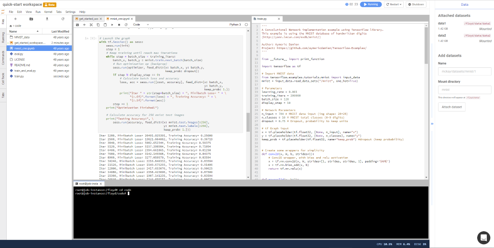
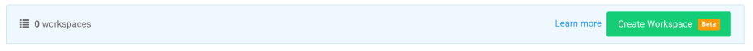
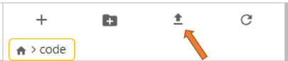
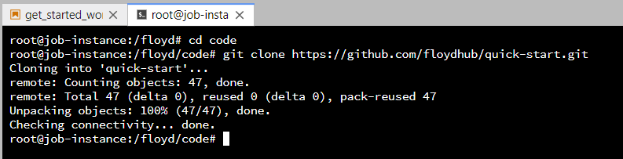
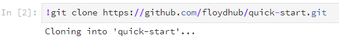
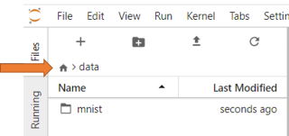

Workspace¶
Workspace is an interactive environment (Jupyter Lab) for developing and running code. You can run Jupyter notebooks, Python scripts and much more. All the files and data in your workspace will be preserved for you, across restarts. You can think of it as your persistent, on-demand machine on the cloud.

Feedback request
Workspace is currently under active development. If you have feedback or feature requests, please let us know - via the chat bubble in your Workspace or email support@floydhub.com
Basics¶
Creating a new workspace¶
To create a new workspace click the Create Workspace button in your project page. Choose the environment you need and the machine you want to use.

Currently, you can create only one workspace in a project. You can delete the existing workspace to create a new one.
Stopping a workspace¶
You can see the current status of your workspace in the top bar. If you want to stop this workspace, click the Shutdown button. All your files and directories in the current directory (/floyd/input) will be saved and persisted.

Important: Save all your notebooks and files before shutting down the workspace. All running notebooks and scripts will be stopped during Shutdown.
Billing
You will be charged for the entire duration that your workspace is running. Please make sure to shutdown the workspace if you are no longer actively using it. You can purchase powerups if you are low on runtime to start a workspace.
Resuming a workspace¶
You can resume working on a stopped workspace by clicking the Resume button in the project page. This will restore the workspace to its previous state.

Code¶
Your workspace is located at /floyd/input on the filesystem. Only code and data files that you store in this directory will be preserved across restarts.
Store your files in /floyd/input
FloydHub only persists files that are stored under /floyd/input. Make sure you store all the files you want persisted here. Files stored in any other location will not be saved when your workspace is shutdown.
Uploading code from local computer¶
You can upload your code and other files from your local machine using the upload button in the File Viewer panel (on the left).

Make sure you upload your code into the /floyd/input directory.
Downloading code from Github¶
If your code is on Github (or any online repository), you can also clone your repository using the git clone command.

Or, via your Jupyter Notebook cell:

You can now start working on your project. Open and run any Notebook or Python script. You can also edit code files and run them using the terminal.
Using Terminal¶
You can open a Bash terminal (console) inside your workspace to run code, debug or inspect your files. To open a new terminal, click the + button in the File Viewer panel (on the left) and click terminal icon.

Frozen terminal
If you terminal freezes due to inactivity, right click and select Refresh Terminal

Data¶
Downloading data from internet¶
If your data is available on the internet, you can also download it directly into your workspace using the Terminal.
# Ensure you're in your workspace directory cd /floyd/input wget http://yann.lecun.com/exdb/mnist/train-images-idx3-ubyte.gz
Attaching FloydHub datasets¶
FloydHub provides an easy way to manage large datasets that you can use across projects. Instead of downloading your data everytime you start a workspace, you can upload your data as a FloydHub dataset.
You can attach FloydHub datasets to your workspace using the right panel. You need to specify the name of the dataset and the directory where you want to attach it. Once the data mounting finishes, you can start using the files in your code.
Example: Attaching the MNIST dataset https://www.floydhub.com/mckay/datasets/mnist/1

Once you attach a dataset, it will be available even when you stop and resume the workspace. Currently there is no option to remove a mounted dataset.
Tip: You can hide the panel on the right by clicking the >> arrow on the panel.
Viewing attached datasets¶
All FloydHub datasets are attached under /floyd/input. You can view your attached datasets using the File Viewer panel. Make sure to click the Home icon and select the data dirctory.

You can also view them using the Terminal:
ls /floyd/input
Switching between CPU and GPU¶
You can easily switch the instance type of your workspace using the Restart button.
For example: if you are working on a Jupyter notebook in a CPU instance, you can switch to a GPU instance to speed up your training. To restart your workspace click the "Restart" button and select the new instance you want to use.

You can purchase powerups if you are low on runtime to start a workspace.
Save your files before shutdown
Save all your notebooks and files before restarting the workspace. All running notebooks and scripts will be stopped during Restart.